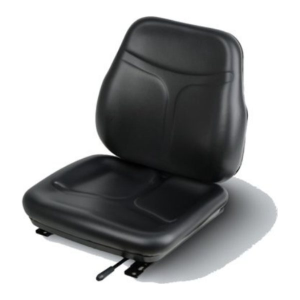
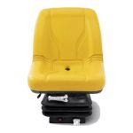
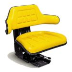
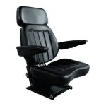

Available
Email for a quote
John Deere TLS-A004 Agricultural & Tractor Seat
| OEM part number | TLS-A004 |
| Fits | John Deere, Kubota, New Holland, Massey Ferguson, Case IH & more |
| Fore/aft adjustment | 150mm |
| Use | Agricultural |
| Category | Seats |
| Type | Aftermarket replacement |
Send us the quantity you need and we'll reply with pricing, usually within 24 hours. Not the exact part? We can source it. Send the part number or a photo.
More Seats
TLS-A001Agricultural & Tractor SeatTLS-A002Agricultural & Tractor SeatTLS-A003Agricultural & Tractor Seat

TLS-A005Agricultural & Tractor Seat
TLS-A006Agricultural & Tractor SeatTLS-A007Agricultural & Tractor SeatTLS-A008Agricultural & Tractor Seat
TLS-A009Agricultural & Tractor Seat